Versus: Tim Burton and Woody Allen
2014 /Editorial Design /Master's Degree work
In this work I had two choose two opposite characters. One that usually does things by the rules, and another that breaks them. With that in mind, I was asked to create two magazines with opposing designs to identify those characters. One magazine following design rules, and the other breaking them. I chose Tim Burton as the man who breaks the rules and goes beyond them, and Woody Allen as the character that follows a certain and more usual pattern.
Tim Burton
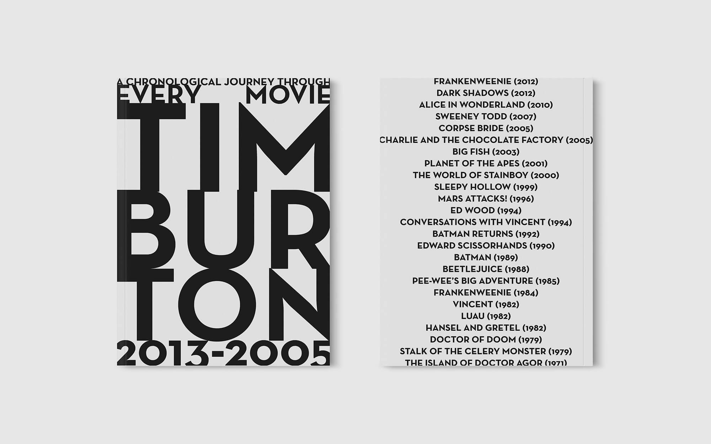 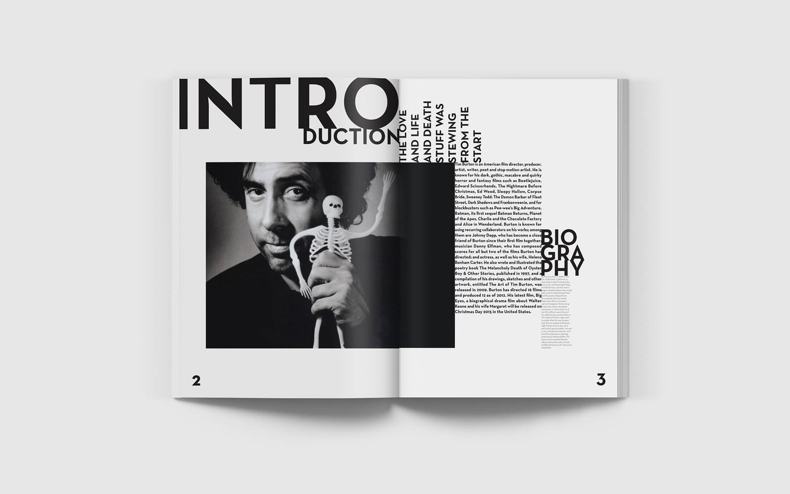

 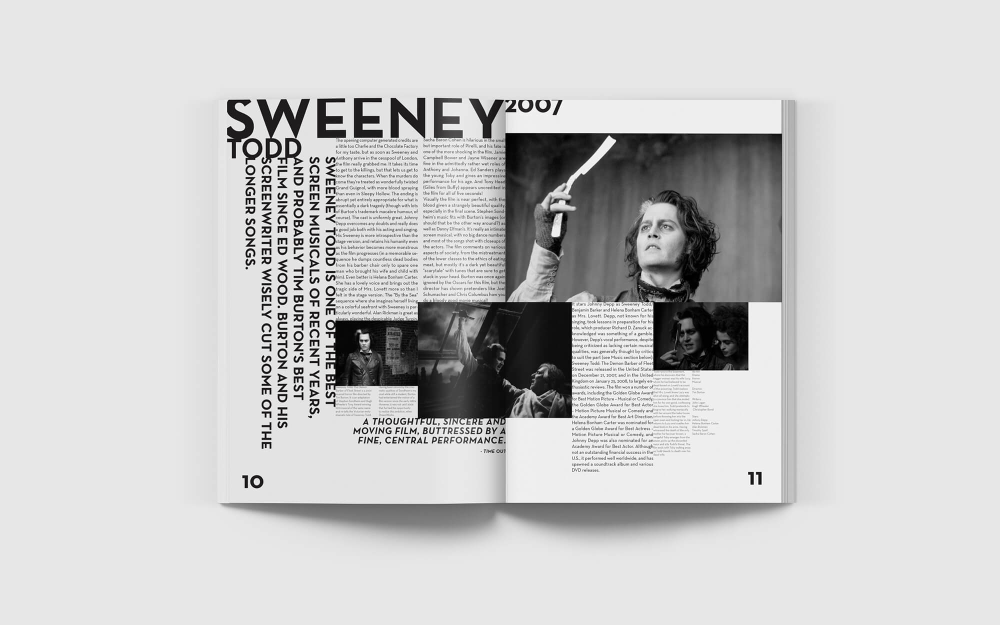
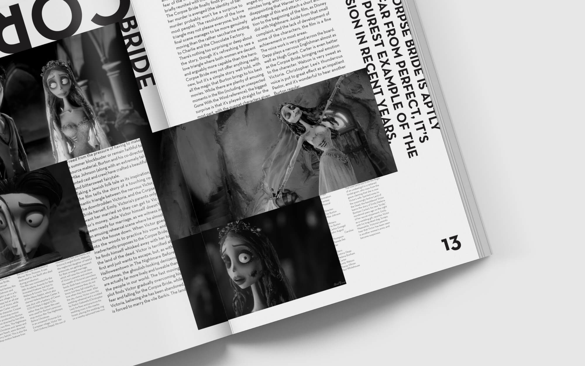
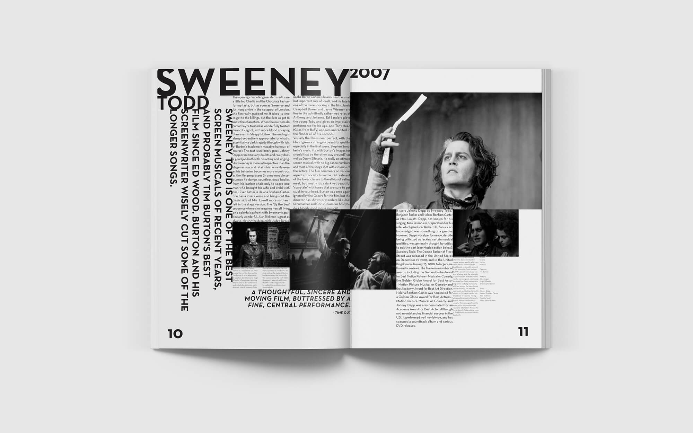
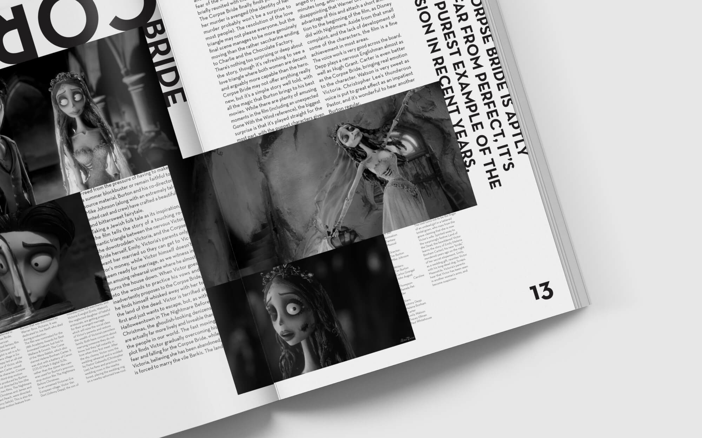

Woody Allen

 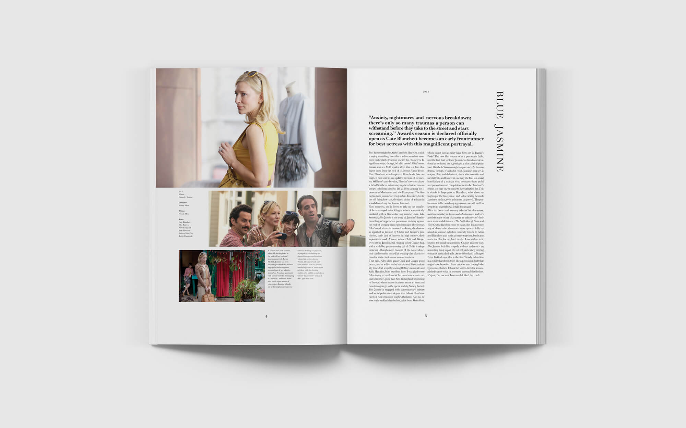
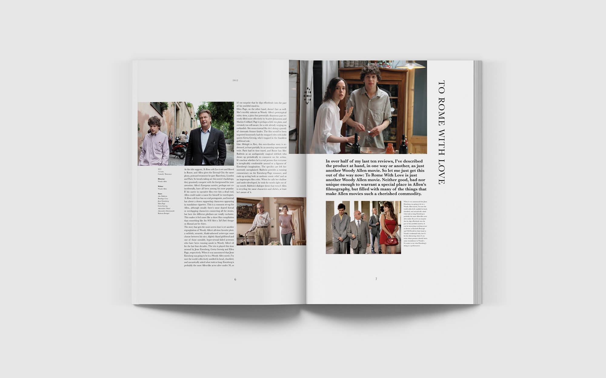
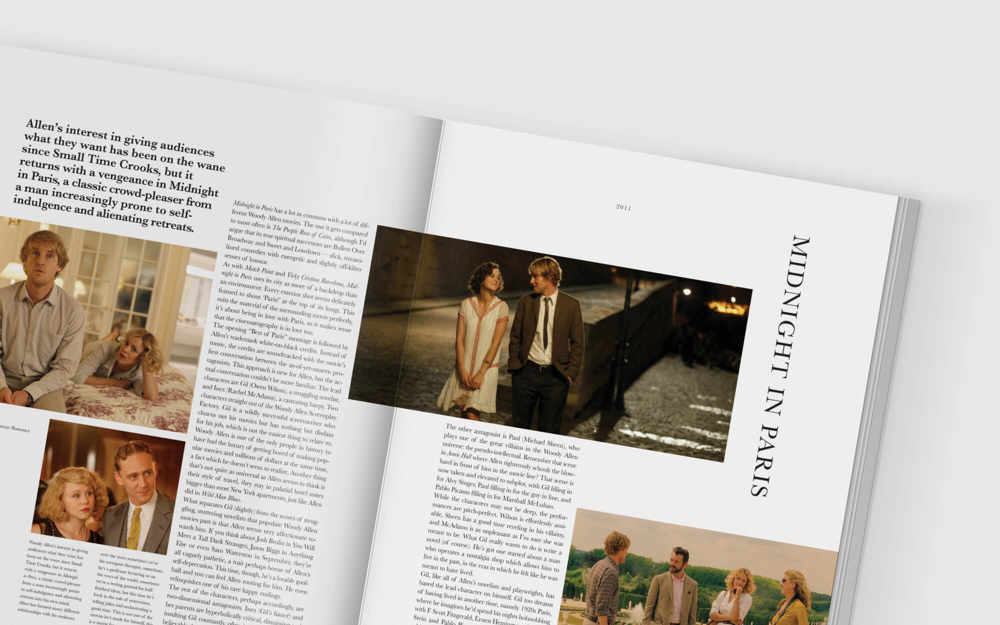
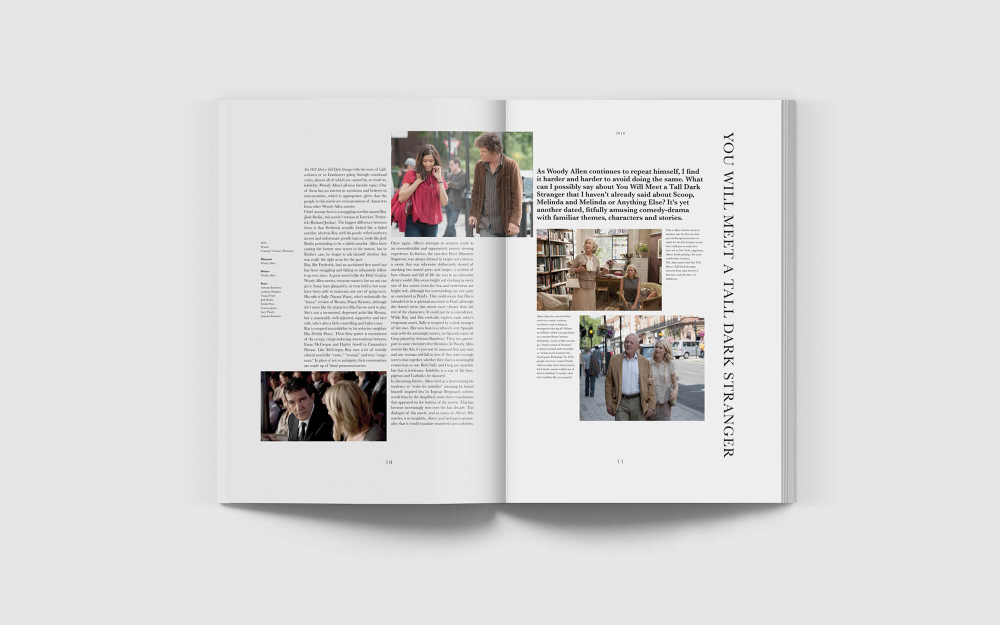
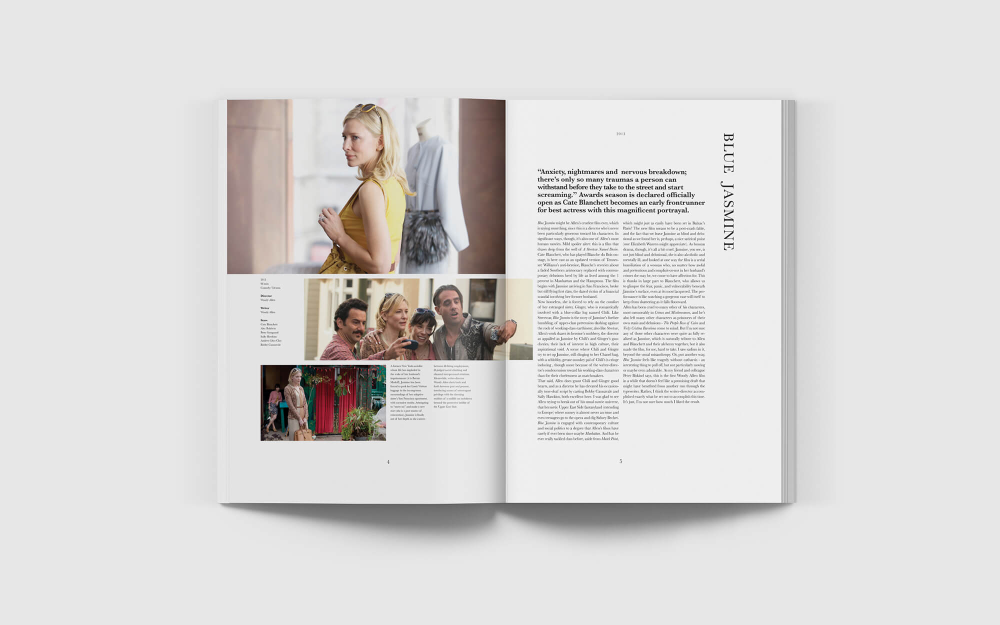
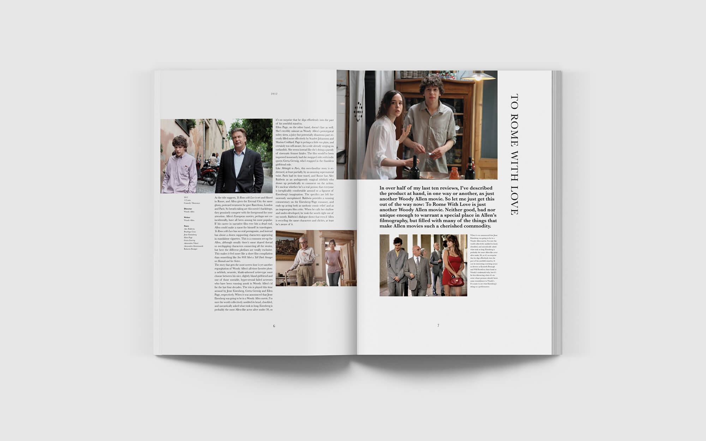
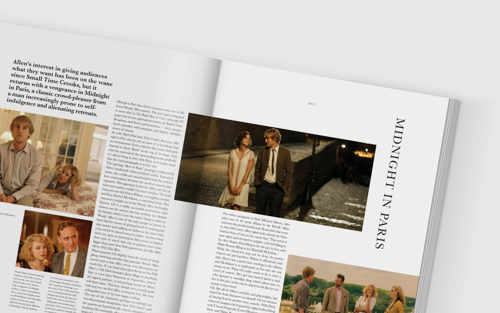
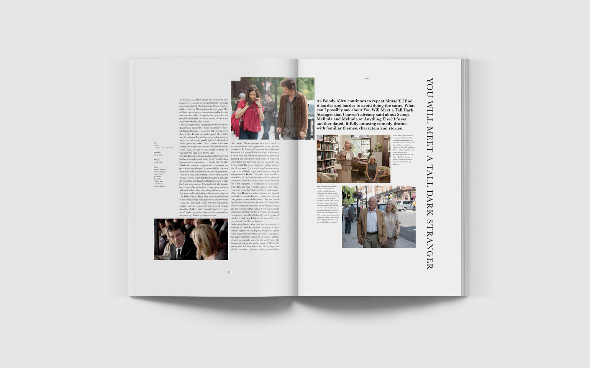


go back
back to top